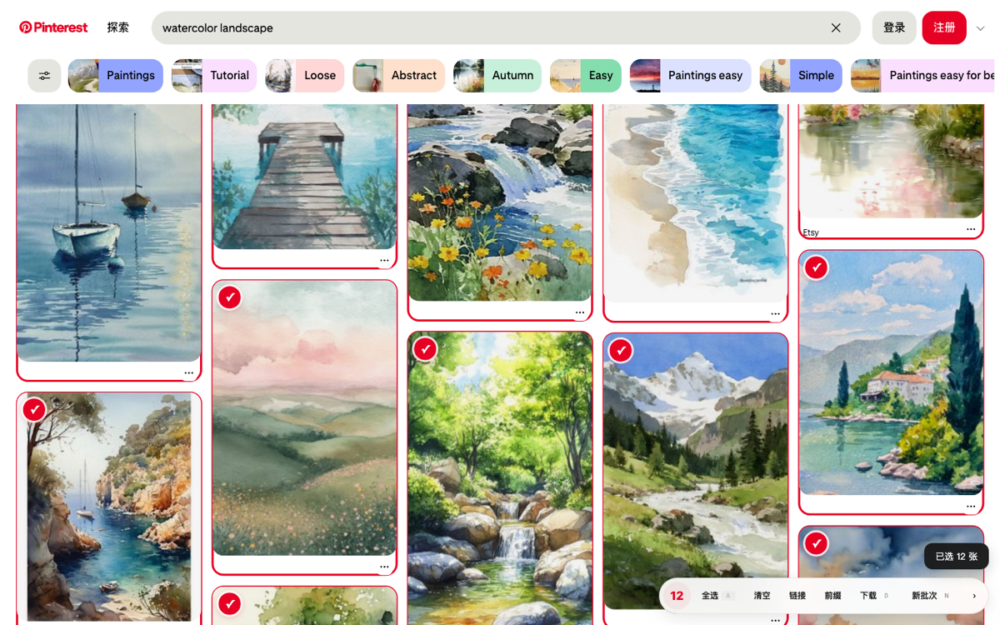
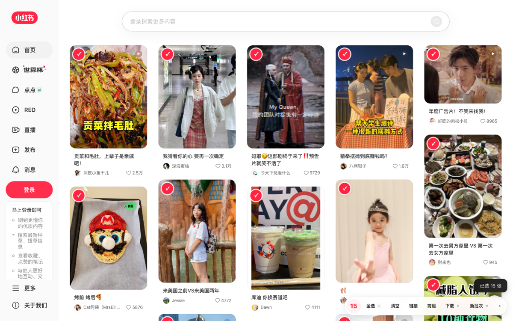
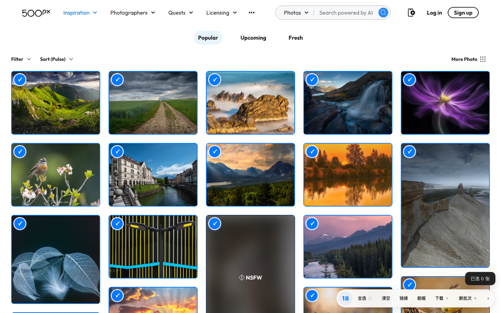
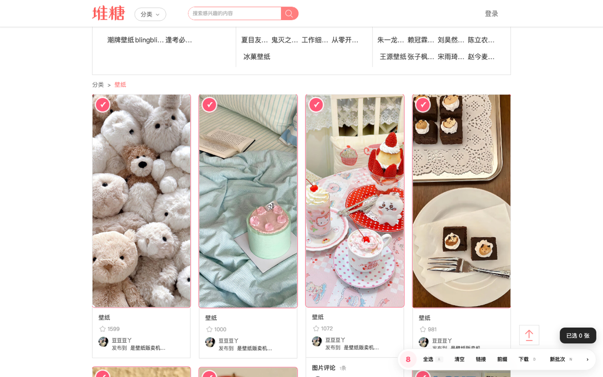
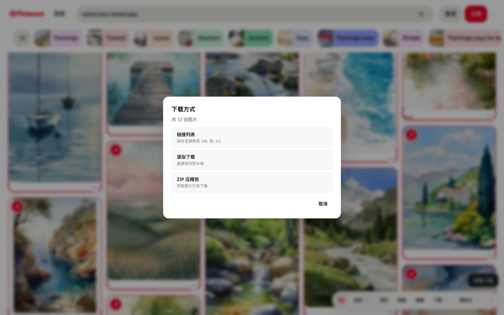

小红书
xiaohongshu.com
把散落在网页里的好图，一张张拾起来。
在图片网站上悬停勾选、一键批量下载原图。像在文件管理器里选文件一样轻，全程留在你本机，不上传任何图片。
01 它解决的问题
02 支持站点
03 核心能力
鼠标移到图片上才出现「＋」，点击选中；也可用键盘快捷键选中指针下的图。
打包 ZIP、逐张保存原图、或导出链接文本，配合 IDM / aria2 也行。
针对每个站点剥离缩略标记、清理签名参数，尽量拿到最高画质。
每次下载/复制都留底，可按站点筛选、滚动预览缩略图、一键重新下载。
同一站点的多个标签共享一份选择，计数实时同步，不再各算各的。
图片字节存进本地，链接过期也能预览和重新下载——不上传任何服务器。
04 截图 · 悬停看原色





06 安装 · Chrome 扩展
克隆或下载 ZIP 后解压到本地。
地址栏进入 chrome://extensions，开启右上角「开发者模式」。
点「加载已解压的扩展程序」，选择 图片下载/extension 目录。
打开支持的网站，点工具栏图标唤出侧边栏，悬停图片选择。
开源 · 免费 · MIT
源码、扩展、六个站点的油猴脚本都在同一个仓库。欢迎 Star、提 Issue、一起适配更多站点。